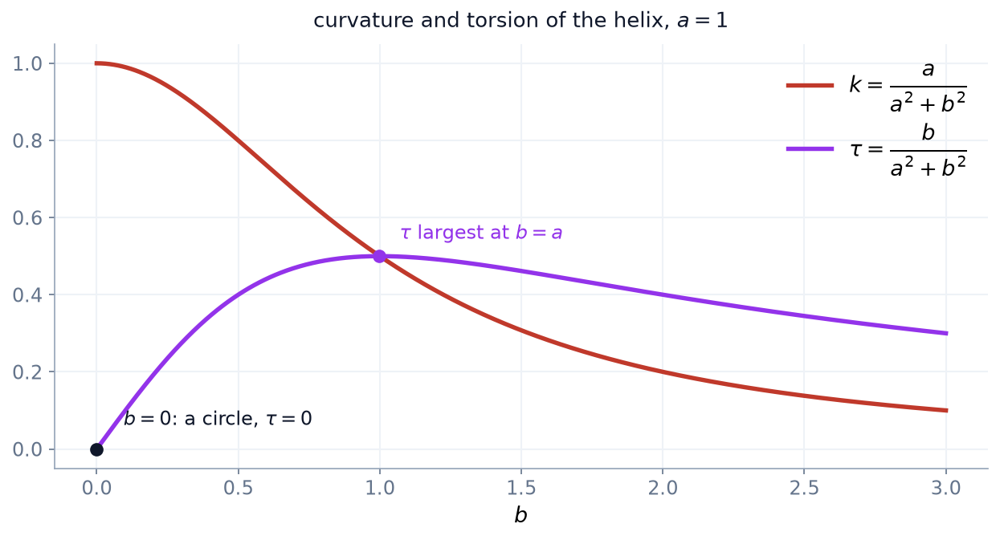

4 תרגול 4: עקומות במרחב
4.1 מכפלה וקטורית
המכפלה הווקטורית היא הכלי שבו נבנה את המסגרת הנעה של עקומה במרחב, ולכן נאסוף כאן את התכונות שישמשו אותנו.
הגדרה 4.1.1 — מכפלה וקטורית.
עבור \(a = \left( a_1, a_2, a_3 \right)\) ו-\(b = \left( b_1, b_2, b_3 \right)\) ב-\(\mathbb{R}^3\), המכפלה הווקטורית שלהם מוגדרת על ידי \[.a \times b = \left( a_2 b_3 - a_3 b_2,\ a_3 b_1 - a_1 b_3,\ a_1 b_2 - a_2 b_1 \right)\]
הערה 4.1.2 — כלל הזיכרון.
נוח לזכור את ההגדרה כפיתוח פורמלי של דטרמיננטה לפי השורה הראשונה, \[,a \times b = \det \begin{pmatrix} e_1 & e_2 & e_3 \\ a_1 & a_2 & a_3 \\ b_1 & b_2 & b_3 \end{pmatrix}\] כאשר \(e_1, e_2, e_3\) הם וקטורי הבסיס הסטנדרטי. זהו כלל זיכרון בלבד, שכן בשורה הראשונה יושבים וקטורים ולא סקלרים, אך המקדמים שהוא מייצר הם בדיוק אלה שבהגדרה.
טענה 4.1.3 — תכונות יסודיות.
לכל \(a, b, c \in \mathbb{R}^3\) ולכל סקלר \(\lambda\) מתקיים:
- אנטי-סימטריה: \(b \times a = -\left( a \times b \right)\), ובפרט \(a \times a = 0\).
- בילינאריות: \(\left( a + \lambda c \right) \times b = a \times b + \lambda \left( c \times b \right)\), ובאותו אופן ברכיב השני.
- ניצבות: \(\left\langle a \times b,\ a \right\rangle = \left\langle a \times b,\ b \right\rangle = 0\).
הוכחה.
אנטי-סימטריה. בהחלפת התפקידים של \(a\) ו-\(b\) כל אחד משלושת הרכיבים בהגדרה מחליף סימן. למשל הרכיב הראשון הופך מ-\(a_2 b_3 - a_3 b_2\) ל-\(b_2 a_3 - b_3 a_2\), שהוא נגדי לו. עבור \(a \times a\) נציב \(b = a\) ונקבל \(a \times a = -\left( a \times a \right)\), ולכן \(a \times a = 0\).
בילינאריות. כל רכיב בהגדרה הוא צירוף של מכפלות שבהן מופיע רכיב אחד של \(a\) ורכיב אחד של \(b\), ולכן הוא לינארי בכל אחד מהם בנפרד.
ניצבות. נחשב ישירות: \[.\left\langle a \times b,\ a \right\rangle = a_1\left( a_2 b_3 - a_3 b_2 \right) + a_2\left( a_3 b_1 - a_1 b_3 \right) + a_3\left( a_1 b_2 - a_2 b_1 \right)\] נפתח את הסוגריים ונקבל שישה מחוברים, \[,a_1 a_2 b_3 - a_1 a_3 b_2 + a_2 a_3 b_1 - a_1 a_2 b_3 + a_1 a_3 b_2 - a_2 a_3 b_1\] והם מצטמצמים בזוגות. עבור \(b\) החישוב זהה, או לחלופין נשתמש באנטי-סימטריה.
טענה 4.1.4 — המכפלה המעורבת.
לכל \(a, b, c \in \mathbb{R}^3\) מתקיים \[,\left\langle a \times b,\ c \right\rangle = \det \left( a, b, c \right)\] כאשר \(\det(a,b,c)\) היא הדטרמיננטה של המטריצה ששורותיה \(a\), \(b\) ו-\(c\).
הוכחה.
נפתח את הדטרמיננטה לפי השורה השלישית: \[.\det(a,b,c) = c_1 \det \begin{pmatrix} a_2 & a_3 \\ b_2 & b_3 \end{pmatrix} - c_2 \det \begin{pmatrix} a_1 & a_3 \\ b_1 & b_3 \end{pmatrix} + c_3 \det \begin{pmatrix} a_1 & a_2 \\ b_1 & b_2 \end{pmatrix}\]
שלושת המינורים הם \[,a_2 b_3 - a_3 b_2, \qquad a_1 b_3 - a_3 b_1, \qquad a_1 b_2 - a_2 b_1\] ולכן, עם הסימנים המתחלפים, \[,\det(a,b,c) = c_1 \left( a_2 b_3 - a_3 b_2 \right) + c_2 \left( a_3 b_1 - a_1 b_3 \right) + c_3 \left( a_1 b_2 - a_2 b_1 \right)\] וזו בדיוק המכפלה הפנימית של \(c\) עם הווקטור שבהגדרת \(a \times b\).
מסקנה 4.1.5 — אורך המכפלה.
לכל \(a, b \in \mathbb{R}^3\) מתקיימת זהות לגראנז’ \[,\left\| a \times b \right\|^2 = \left\| a \right\|^2 \left\| b \right\|^2 - \left\langle a, b \right\rangle^2\] ולכן, אם \(\theta\) היא הזווית בין \(a\) ל-\(b\), \[.\left\| a \times b \right\| = \left\| a \right\| \left\| b \right\| \sin \theta\] בפרט \(a \times b = 0\) אם ורק אם \(a\) ו-\(b\) תלויים לינארית.
הוכחה.
את זהות לגראנז’ מקבלים בפתיחה ישירה של שני האגפים; שניהם מסתכמים באותם מחוברים. מכאן, לפי \(\left\langle a, b \right\rangle = \left\| a \right\| \left\| b \right\| \cos \theta\), \[,\left\| a \times b \right\|^2 = \left\| a \right\|^2 \left\| b \right\|^2 \left( 1 - \cos^2 \theta \right) = \left\| a \right\|^2 \left\| b \right\|^2 \sin^2 \theta\] ומכיוון ש-\(0 \leq \theta \leq \pi\) מתקיים \(\sin \theta \geq 0\), ואפשר להוציא שורש בלי ערך מוחלט.
לבסוף, \(a \times b = 0\) אם ורק אם \(\left\| a \right\| \left\| b \right\| \sin\theta = 0\), כלומר אם אחד הווקטורים הוא אפס או \(\theta \in \{0, \pi\}\), וזה בדיוק תנאי התלות הלינארית.
טענה 4.1.6 — פיתוח המכפלה המשולשת.
לכל \(a, b, c \in \mathbb{R}^3\) מתקיים \[.a \times \left( b \times c \right) = \left\langle a, c \right\rangle b - \left\langle a, b \right\rangle c\]
הוכחה.
שני האגפים לינאריים בכל אחד משלושת המשתנים, ולכן די לבדוק את הזהות על וקטורי הבסיס הסטנדרטי \(e_1, e_2, e_3\). נבדוק את הרכיב הראשון של האגף השמאלי ישירות מההגדרה.
נסמן \(u = b \times c\), כלומר \(u_1 = b_2 c_3 - b_3 c_2\) וכן הלאה. הרכיב הראשון של \(a \times u\) הוא \[.a_2 u_3 - a_3 u_2 = a_2 \left( b_1 c_2 - b_2 c_1 \right) - a_3 \left( b_3 c_1 - b_1 c_3 \right)\]
נפתח ונאסוף לפי \(b_1\) ולפי \(c_1\): \[.a_2 b_1 c_2 - a_2 b_2 c_1 - a_3 b_3 c_1 + a_3 b_1 c_3 = b_1 \left( a_2 c_2 + a_3 c_3 \right) - c_1 \left( a_2 b_2 + a_3 b_3 \right)\]
נוסיף ונחסר את המחובר החסר \(a_1 b_1 c_1\) בכל אחד מהסוגריים: \[,b_1 \left( a_1 c_1 + a_2 c_2 + a_3 c_3 \right) - c_1 \left( a_1 b_1 + a_2 b_2 + a_3 b_3 \right)\] שכן התוספות \(b_1 a_1 c_1\) ו-\(c_1 a_1 b_1\) שוות ומבטלות זו את זו. הביטוי האחרון הוא בדיוק הרכיב הראשון של \(\left\langle a, c \right\rangle b - \left\langle a, b \right\rangle c\). עבור הרכיבים השני והשלישי החישוב זהה, בהחלפה מעגלית של האינדקסים.
טענה 4.1.7 — כלל המכפלה לגזירה.
תהיינה \(u(t)\) ו-\(v(t)\) פונקציות וקטוריות גזירות ב-\(\mathbb{R}^3\). אז \[.\frac{d}{dt}\left( u \times v \right) = \frac{du}{dt} \times v + u \times \frac{dv}{dt}\]
הוכחה.
נבדוק רכיב-רכיב. הרכיב הראשון של \(u \times v\) הוא \(u_2 v_3 - u_3 v_2\), ולפי כלל המכפלה לפונקציות סקלריות \[.\frac{d}{dt}\left( u_2 v_3 - u_3 v_2 \right) = \left( u_2' v_3 - u_3' v_2 \right) + \left( u_2 v_3' - u_3 v_2' \right)\] המחובר הראשון הוא הרכיב הראשון של \(u' \times v\), והשני הוא הרכיב הראשון של \(u \times v'\). שני הרכיבים הנותרים מתקבלים באותו אופן.
שימו לב שהסדר נשמר: מכיוון שהמכפלה הווקטורית אנטי-סימטרית, אסור להחליף את סדר הגורמים באגף ימין.
תרגילים
שאלה 4.1.8.
תהי \(\{u, v\}\) זוג וקטורים אורתונורמליים ב-\(\mathbb{R}^3\). הראו ש-\(\left\{ u, v, u \times v \right\}\) הוא בסיס אורתונורמלי של \(\mathbb{R}^3\).
פתרון.
שלב 1: ניצבות
לפי טענה 4.1.3 הווקטור \(u \times v\) ניצב ל-\(u\) ול-\(v\), ולפי ההנחה \(u\) ו-\(v\) ניצבים זה לזה. לכן שלושת הווקטורים ניצבים בזוגות.
שלב 2: אורך
לפי מסקנה 4.1.5 \[,\left\| u \times v \right\|^2 = \left\| u \right\|^2 \left\| v \right\|^2 - \left\langle u, v \right\rangle^2 = 1 \cdot 1 - 0 = 1\] ולכן \(\left\| u \times v \right\| = 1\). יחד עם ההנחה שגם \(u\) ו-\(v\) הם וקטורי יחידה, שלושת הווקטורים אורתונורמליים.
שלב 3: בסיס
קבוצה אורתונורמלית היא בפרט בלתי תלויה לינארית: אם \(\alpha u + \beta v + \gamma \left( u \times v \right) = 0\), נכפול סקלרית ב-\(u\) ונקבל \(\alpha = 0\), ובאותו אופן \(\beta = \gamma = 0\). שלושה וקטורים בלתי תלויים ב-\(\mathbb{R}^3\) מהווים בסיס.
שאלה 4.1.9.
הראו שהמכפלה הווקטורית אינה אסוציאטיבית, כלומר שקיימים \(a, b, c\) שעבורם \[.\left( a \times b \right) \times c \neq a \times \left( b \times c \right)\]
פתרון.
דוגמה נגדית
ניקח \(a = b = e_1\) ו-\(c = e_2\). באגף שמאל \[,\left( e_1 \times e_1 \right) \times e_2 = 0 \times e_2 = 0\] שכן \(a \times a = 0\) לפי טענה 4.1.3.
באגף ימין נשתמש בטענה 4.1.6: \[.e_1 \times \left( e_1 \times e_2 \right) = \left\langle e_1, e_2 \right\rangle e_1 - \left\langle e_1, e_1 \right\rangle e_2 = 0 \cdot e_1 - 1 \cdot e_2 = -e_2\]
שני האגפים שונים, ולכן אין אסוציאטיביות.
4.2 עקומות במרחב
הגדרה 4.2.1 — עקומה במרחב.
עקומה ב-\(\mathbb{R}^3\) היא פונקציה \[,\gamma(t) = \left( \gamma^1(t),\ \gamma^2(t),\ \gamma^3(t) \right)\] והיא רגולרית בנקודה \(t_0\) אם \(\gamma'(t_0)\) קיימת ושונה מאפס. במקרה זה \(\gamma'(t_0)\) הוא הוקטור המשיק לעקומה בנקודה.
הגדרה 4.2.2 — אורך קשת במרחב.
תהי \(\gamma : [a,b] \to \mathbb{R}^3\) עקומה רגולרית. אורכה הוא \[,L = \int_a^b \left\| \gamma'(t) \right\| dt = \int_a^b \sqrt{\left( \gamma^{1\prime}(t) \right)^2 + \left( \gamma^{2\prime}(t) \right)^2 + \left( \gamma^{3\prime}(t) \right)^2}\, dt\] ופרמטר אורך הקשת מוגדר על ידי \[.s(t) = \int_0^t \left\| \gamma'(u) \right\| du\]
הגדרה 4.2.3 — המסגרת הנעה.
תהי \(\gamma(s)\) עקומה במרחב בפרמטריזציית אורך קשת, שעקמומיותה \[,k(s) = \left\| T'(s) \right\|\] אינה מתאפסת. אז מוגדרים
- הוקטור המשיק \[,T(s) = \gamma'(s)\]
- הוקטור הנורמלי הראשי \[,N(s) = \frac{1}{k(s)} T'(s)\]
- הוקטור הבי-נורמלי \[.B(s) = T(s) \times N(s)\]
בפרמטריזציה כללית \(T = \dfrac{\gamma'}{\left\| \gamma' \right\|}\) ו-\(N = \dfrac{T'}{\left\| T' \right\|}\).
הערה 4.2.4 — שימו לב לשינוי בהגדרות.
שתי נקודות שבהן ההגדרה במרחב שונה מזו שבמישור.
ראשית, במישור הגדרנו את \(N\) כסיבוב של \(T\) בזווית \(90^\circ\), וסיבוב כזה אינו קיים במרחב. לכן \(N\) מוגדר כאן דרך \(T'\) עצמו, ומכאן שהוא מוגדר רק היכן ש-\(T' \neq 0\).
שנית, ומאותה סיבה, העקמומיות במרחב היא \(k = \left\| T' \right\|\) ולכן אי-שלילית תמיד, בעוד שבמישור \(k\) הייתה מסומנת. הסימן היה תלוי בבחירת הכיוון של \(N\), ובמרחב אין בחירה כזו.
טענה 4.2.5 — המסגרת אורתונורמלית וימנית.
בכל נקודה שבה \(k \neq 0\), השלישייה \(\left\{ T, N, B \right\}\) היא בסיס אורתונורמלי ימני של \(\mathbb{R}^3\), ומתקיים \[.T \times N = B, \qquad N \times B = T, \qquad B \times T = N\]
הוכחה.
\(T\) הוא וקטור יחידה לפי ההגדרה, ו-\(N\) הוא וקטור יחידה שכן חילקנו את \(T'\) באורכו.
הניצבות של \(T\) ו-\(N\) נובעת מכך ש-\(\left\| T \right\| \equiv 1\): בגזירת \(\left\langle T, T \right\rangle = 1\) מתקבל \(2\left\langle T', T \right\rangle = 0\), ומכיוון ש-\(N\) מקביל ל-\(T'\) גם \(\left\langle N, T \right\rangle = 0\).
מכאן, לפי שאלה 4.1.8, \(\left\{ T, N, T \times N \right\}\) הוא בסיס אורתונורמלי, וזה בדיוק \(\left\{ T, N, B \right\}\). הזהויות המחזוריות הן התכונה הסטנדרטית של בסיס אורתונורמלי ימני.
4.3 מערכת פרנה־סרה
הגדרה 4.3.1 — פיתול.
תהי \(\gamma(s)\) עקומה במרחב בפרמטריזציית אורך קשת שעקמומיותה אינה מתאפסת. אז קיים סקלר \(\tau(s)\), הנקרא הפיתול של \(\gamma\), כך ש-\[.B'(s) = -\tau(s) N(s)\]
הוכחה.
צריך להראות ש-\(B'\) אכן מקביל ל-\(N\); הסקלר \(\tau\) מוגדר אז כמקדם, והסימן המינוס הוא מוסכמה שתחסוך סימנים בהמשך.
\(B'\) ניצב ל-\(B\). הווקטור \(B\) הוא וקטור יחידה, ולכן בגזירת \(\left\langle B, B \right\rangle = 1\) מתקבל \(\left\langle B', B \right\rangle = 0\).
\(B'\) ניצב ל-\(T\). נגזור את \(B = T \times N\) לפי טענה 4.1.7: \[.B' = T' \times N + T \times N'\] המחובר הראשון מתאפס, שכן \(T' = kN\) ולכן \(T' \times N = k \left( N \times N \right) = 0\). נשאר \[,B' = T \times N'\] ולפי טענה 4.1.3 הביטוי הזה ניצב ל-\(T\).
מסקנה. \(B'\) ניצב גם ל-\(B\) וגם ל-\(T\), ומכיוון ש-\(\left\{ T, N, B \right\}\) בסיס אורתונורמלי, המשלים הניצב ל-\(\operatorname{span}\{T, B\}\) נפרש על ידי \(N\). לכן \(B'\) מקביל ל-\(N\), כלומר \(B' = -\tau N\) עבור סקלר \(\tau\) מתאים.
משפט 4.3.2 — משוואות פרנה־סרה.
תהי \(\gamma(s)\) עקומה במרחב בפרמטריזציית אורך קשת שעקמומיותה אינה מתאפסת. אז \[,\begin{cases} T' = kN \\ N' = -kT + \tau B \\ B' = -\tau N \end{cases}\] ובכתיב מטריציוני \[.\begin{pmatrix} T' \\ N' \\ B' \end{pmatrix} = \begin{pmatrix} 0 & k & 0 \\ -k & 0 & \tau \\ 0 & -\tau & 0 \end{pmatrix} \begin{pmatrix} T \\ N \\ B \end{pmatrix}\]
הוכחה.
המשוואה הראשונה היא הגדרת \(N\), והשלישית היא הגדרה 4.3.1. נותרה השנייה.
נשתמש בזהות \(N = B \times T\) מטענה 4.2.5 ונגזור אותה לפי טענה 4.1.7: \[.N' = B' \times T + B \times T'\]
נציב את שתי המשוואות הידועות, \(B' = -\tau N\) ו-\(T' = kN\): \[.N' = \left( -\tau N \right) \times T + B \times \left( kN \right) = -\tau \left( N \times T \right) + k \left( B \times N \right)\]
לפי הזהויות המחזוריות \(N \times T = -B\) וגם \(B \times N = -T\), ולכן \[.N' = -\tau \left( -B \right) + k \left( -T \right) = -kT + \tau B\]
הערה 4.3.3.
המטריצה במשפט היא אנטי-סימטרית, כלומר שווה למינוס המשוחלפת שלה. זו אינה מקריות: היא הביטוי לכך שהמסגרת נשארת אורתונורמלית לאורך העקומה. גם קל יותר לזכור כך את המערכת, שכן די לזכור את שני המקדמים \(k\) ו-\(\tau\) ואת מקומם.
טענה 4.3.4 — פיתול מודד יציאה ממישור.
תהי \(\gamma\) עקומה רגולרית ב-\(\mathbb{R}^3\) שעקמומיותה אינה מתאפסת. אז התמונה של \(\gamma\) מוכלת במישור אם ורק אם \(\tau \equiv 0\).
הוכחה.
נניח שהפרמטריזציה היא באורך קשת; זה אינו משנה לא את הפיתול ולא את השאלה אם העקומה מישורית.
כיוון ראשון. נניח שהעקומה מוכלת במישור \(\left\langle v, N_0 \right\rangle = d\), כאשר \(N_0\) וקטור יחידה קבוע. נגזור את \(\left\langle \gamma, N_0 \right\rangle = d\) לפי \(s\) ונקבל \[,\left\langle T, N_0 \right\rangle = 0\] ובגזירה נוספת, מכיוון ש-\(N_0\) קבוע, \[.\left\langle T', N_0 \right\rangle = 0\] אבל \(T' = kN\) ו-\(k \neq 0\), ולכן גם \[.\left\langle N, N_0 \right\rangle = 0\]
שני הווקטורים \(T\) ו-\(N\) ניצבים ל-\(N_0\), ולכן \(B = T \times N\) מקביל ל-\(N_0\). שניהם וקטורי יחידה ו-\(B\) רציף, ולכן \(B \equiv N_0\) או \(B \equiv -N_0\); בשני המקרים \(B\) קבוע, ומכאן \(B' = 0\) ולכן \(\tau = 0\).
כיוון שני. נניח \(\tau \equiv 0\). אז \(B' = 0\), כלומר \(B\) וקטור קבוע. נגזור את המכפלה \(\left\langle \gamma, B \right\rangle\): \[,\frac{d}{ds}\left\langle \gamma, B \right\rangle = \left\langle \gamma', B \right\rangle = \left\langle T, B \right\rangle = 0\] ולכן \(\left\langle \gamma, B \right\rangle\) קבועה, נאמר \(d\). משמעות הדבר היא ש-\(\gamma\) מוכלת במישור \(\left\langle v, B \right\rangle = d\).
טענה 4.3.5 — עקמומיות קבועה ופיתול אפס.
תהי \(\gamma(s)\) עקומה במרחב בפרמטריזציית אורך קשת שעקמומיותה \(k\) קבועה ופיתולה \(\tau \equiv 0\). אז \(\gamma\) היא פרמטריזציה של קשת מעגל ברדיוס \(\frac{1}{k}\).
הוכחה.
לפי טענה 4.3.4 העקומה מוכלת במישור \(\Pi\) הניצב ל-\(B\) הקבוע.
נתבונן בביטוי \(\gamma + \frac{1}{k} N\) ונגזור אותו. מכיוון ש-\(k\) קבועה, \[.\frac{d}{ds}\left( \gamma + \frac{1}{k} N \right) = T + \frac{1}{k} N'\] לפי פרנה־סרה, ומכיוון ש-\(\tau = 0\), \[,N' = -kT + \tau B = -kT\] ולכן \[.T + \frac{1}{k}\left( -kT \right) = T - T = 0\]
לכן \(\gamma + \frac{1}{k} N\) הוא וקטור קבוע, נסמנו \(a\). מכאן \[,\left\| \gamma - a \right\| = \left\| -\frac{1}{k} N \right\| = \frac{1}{k}\] כלומר כל נקודות העקומה נמצאות במרחק קבוע \(\frac{1}{k}\) מהנקודה \(a\). יחד עם ההכלה במישור \(\Pi\) מתקבל שהעקומה מוכלת במעגל ברדיוס \(\frac{1}{k}\) שמרכזו \(a\).
תרגילים
שאלה 4.3.6.
חשבו את \(T\), \(N\), \(B\), את העקמומיות ואת הפיתול של העקומה \[,\gamma(t) = \left( \frac{4}{5}\cos t,\ 1 - \sin t,\ -\frac{3}{5}\cos t \right)\] והראו שהיא מעגל. מצאו את מרכזו, את רדיוסו ואת המישור שבו הוא מונח.
פתרון.
שלב 1: הפרמטריזציה היא באורך קשת
נגזור: \[.\gamma'(t) = \left( -\frac{4}{5}\sin t,\ -\cos t,\ \frac{3}{5}\sin t \right)\] נחשב את האורך בריבוע: \[,\left\| \gamma' \right\|^2 = \frac{16}{25}\sin^2 t + \cos^2 t + \frac{9}{25}\sin^2 t = \left( \frac{16}{25} + \frac{9}{25} \right)\sin^2 t + \cos^2 t = \sin^2 t + \cos^2 t = 1\] ולכן \(\left\| \gamma' \right\| = 1\) והפרמטריזציה היא באורך קשת. בפרט \(T = \gamma'\).
שלב 2: עקמומיות ונורמל
נגזור שוב: \[.T'(t) = \left( -\frac{4}{5}\cos t,\ \sin t,\ \frac{3}{5}\cos t \right)\] באותו חישוב כמו קודם \(\left\| T' \right\| = 1\), ולכן \[,k = 1\] והנורמל הראשי הוא \[.N = \frac{1}{k}T' = \left( -\frac{4}{5}\cos t,\ \sin t,\ \frac{3}{5}\cos t \right)\]
שלב 3: הבי-נורמל והפיתול
נחשב \(B = T \times N\) לפי ההגדרה. הרכיב הראשון: \[.T_2 N_3 - T_3 N_2 = \left( -\cos t \right)\left( \frac{3}{5}\cos t \right) - \left( \frac{3}{5}\sin t \right)\left( \sin t \right) = -\frac{3}{5}\left( \cos^2 t + \sin^2 t \right) = -\frac{3}{5}\]
הרכיב השני: \[.T_3 N_1 - T_1 N_3 = \left( \frac{3}{5}\sin t \right)\left( -\frac{4}{5}\cos t \right) - \left( -\frac{4}{5}\sin t \right)\left( \frac{3}{5}\cos t \right) = 0\]
הרכיב השלישי: \[.T_1 N_2 - T_2 N_1 = \left( -\frac{4}{5}\sin t \right)\left( \sin t \right) - \left( -\cos t \right)\left( -\frac{4}{5}\cos t \right) = -\frac{4}{5}\]
לכן \[,B = \left( -\frac{3}{5},\ 0,\ -\frac{4}{5} \right)\] וזהו וקטור קבוע. מכאן \(B' = 0\), ולפי הגדרה 4.3.1 \[.\tau = 0\]
שלב 4: זיהוי המעגל
העקמומיות קבועה, \(k = 1\), והפיתול מתאפס, ולכן לפי טענה 4.3.5 העקומה היא קשת מעגל ברדיוס \(\frac{1}{k} = 1\). מרכזו הוא הווקטור הקבוע \[,a = \gamma + \frac{1}{k}N = \left( \frac{4}{5}\cos t - \frac{4}{5}\cos t,\ 1 - \sin t + \sin t,\ -\frac{3}{5}\cos t + \frac{3}{5}\cos t \right) = \left( 0, 1, 0 \right)\] כפי שאכן יצא קבוע.
המישור הוא זה שעובר דרך \(a\) וניצב ל-\(B\), כלומר \[,\left\langle v - a,\ B \right\rangle = 0\] ובהצבה \(-\frac{3}{5}x - \frac{4}{5}z = 0\), כלומר \[.3x + 4z = 0\]
העקומה של התרגיל: מעגל היחידה שמרכזו \((0,1,0)\), המונח במישור \(3x + 4z = 0\). המסגרת הנעה מצוירת בשלוש נקודות. שימו לב ש-\(T\) ו-\(N\) מסתובבים לאורך המעגל, ואילו \(B\) מצביע תמיד לאותו כיוון: זהו הביטוי הגרפי ל-\(B' = 0\), כלומר \(\tau = 0\). הגרסה האינטראקטיבית, שבה אפשר לסובב את המבט, זמינה בגרסה המקוונת.
4.4 חישוב עקמומיות ופיתול
משפט 4.4.1 — נוסחאות בפרמטריזציה כללית.
תהי \(\gamma(t)\) עקומה רגולרית ב-\(\mathbb{R}^3\) שעקמומיותה אינה מתאפסת. אז \[,k = \frac{\left\| \gamma' \times \gamma'' \right\|}{\left\| \gamma' \right\|^3}\] \[.\tau = \frac{\left\langle \gamma' \times \gamma'',\ \gamma''' \right\rangle}{\left\| \gamma' \times \gamma'' \right\|^2}\] בפרמטריזציית אורך קשת הנוסחאות מתפשטות ל-\[,k = \left\| \gamma'' \right\|\] \[.\tau = \frac{\det \left( \gamma', \gamma'', \gamma''' \right)}{k^2}\]
הוכחה.
נוכיח תחילה את הנוסחה לפיתול בפרמטריזציית אורך קשת, ואז נסביר מדוע היא נשמרת בפרמטריזציה כללית.
המקרה של אורך קשת. מהגדרת הפיתול \(\tau = -\left\langle N, B' \right\rangle\), ולכן \[.\tau = -\left\langle N,\ \left( T \times N \right)' \right\rangle = -\left\langle N,\ T' \times N + T \times N' \right\rangle = -\left\langle N,\ T \times N' \right\rangle\] שכן \(T' \times N = kN \times N = 0\).
כעת נציב \(N = \frac{1}{k}\gamma''\) ו-\(T = \gamma'\), ונשים לב ש-\[,N' = \frac{1}{k}\gamma''' - \frac{k'}{k^2}\gamma''\] ולכן \[.\tau = -\left\langle \frac{1}{k}\gamma'',\ \gamma' \times \left( \frac{1}{k}\gamma''' - \frac{k'}{k^2}\gamma'' \right) \right\rangle\]
המחובר השני מתאפס: הוא כפולה של \(\gamma' \times \gamma''\), שניצב ל-\(\gamma''\). נשאר \[,\tau = -\frac{1}{k^2}\left\langle \gamma'',\ \gamma' \times \gamma''' \right\rangle = \frac{1}{k^2}\left\langle \gamma''',\ \gamma' \times \gamma'' \right\rangle\] כאשר בשוויון האחרון השתמשנו בטענה 4.1.4 ובכך שהחלפת שתי שורות בדטרמיננטה הופכת את סימנה. זו בדיוק הנוסחה המבוקשת, שכן בפרמטריזציית אורך קשת \(\gamma'\) ו-\(\gamma''\) ניצבים ולכן \(\left\| \gamma' \times \gamma'' \right\| = \left\| \gamma'' \right\| = k\).
המקרה הכללי. יהי \(s\) אורך הקשת. לפי כלל השרשרת \[,\frac{d\gamma}{dt} = \frac{ds}{dt}\frac{d\gamma}{ds}\] ובגזירות נוספות מתקבל \[,\gamma' \times \gamma'' = \left( \frac{ds}{dt} \right)^3 \left( \frac{d\gamma}{ds} \times \frac{d^2\gamma}{ds^2} \right)\] שכן כל האיברים הנוספים הם כפולות של \(\frac{d\gamma}{ds} \times \frac{d\gamma}{ds} = 0\). באותו אופן \[.\left\langle \gamma' \times \gamma'',\ \gamma''' \right\rangle = \left( \frac{ds}{dt} \right)^6 \left\langle \frac{d\gamma}{ds} \times \frac{d^2\gamma}{ds^2},\ \frac{d^3\gamma}{ds^3} \right\rangle\]
במנה שבנוסחת הפיתול המונה נושא \(\left( \frac{ds}{dt} \right)^6\) והמכנה \(\left( \frac{ds}{dt} \right)^6\), ולכן הגורם מצטמצם והביטוי אינו תלוי בפרמטריזציה. עבור העקמומיות, \(\left\| \gamma' \times \gamma'' \right\| = \left( \frac{ds}{dt} \right)^3 k\) ו-\(\left\| \gamma' \right\|^3 = \left( \frac{ds}{dt} \right)^3\), ובחלוקה מתקבל \(k\).
תרגילים
שאלה 4.4.2.
חשבו את העקמומיות ואת הפיתול של הסליל \[,\gamma(\theta) = \left( a\cos\theta,\ a\sin\theta,\ b\theta \right)\] כאשר \(a > 0\) ו-\(b\) קבועים.
פתרון.
שלב 1: נגזרות
\[,\gamma'(\theta) = \left( -a\sin\theta,\ a\cos\theta,\ b \right)\] \[,\gamma''(\theta) = \left( -a\cos\theta,\ -a\sin\theta,\ 0 \right)\] \[.\gamma'''(\theta) = \left( a\sin\theta,\ -a\cos\theta,\ 0 \right)\]
שלב 2: המכפלה הווקטורית
נחשב \(\gamma' \times \gamma''\) רכיב-רכיב. הרכיב הראשון: \[.\left( a\cos\theta \right)\cdot 0 - b\left( -a\sin\theta \right) = ab\sin\theta\] הרכיב השני: \[.b\left( -a\cos\theta \right) - \left( -a\sin\theta \right)\cdot 0 = -ab\cos\theta\] הרכיב השלישי: \[.\left( -a\sin\theta \right)\left( -a\sin\theta \right) - \left( a\cos\theta \right)\left( -a\cos\theta \right) = a^2\sin^2\theta + a^2\cos^2\theta = a^2\]
לכן \[.\gamma' \times \gamma'' = \left( ab\sin\theta,\ -ab\cos\theta,\ a^2 \right)\]
שלב 3: העקמומיות
נחשב את האורכים: \[,\left\| \gamma' \right\|^2 = a^2\sin^2\theta + a^2\cos^2\theta + b^2 = a^2 + b^2\] \[.\left\| \gamma' \times \gamma'' \right\|^2 = a^2b^2\sin^2\theta + a^2b^2\cos^2\theta + a^4 = a^2b^2 + a^4 = a^2\left( a^2 + b^2 \right)\]
מכאן \(\left\| \gamma' \times \gamma'' \right\| = a\sqrt{a^2+b^2}\) ו-\(\left\| \gamma' \right\|^3 = \left( a^2+b^2 \right)^{3/2}\), ולכן \[.k = \frac{a\sqrt{a^2+b^2}}{\left( a^2+b^2 \right)^{3/2}} = \frac{a}{a^2+b^2}\]
שלב 4: הפיתול
נחשב את המונה: \[.\left\langle \gamma' \times \gamma'',\ \gamma''' \right\rangle = ab\sin\theta \cdot a\sin\theta + \left( -ab\cos\theta \right)\left( -a\cos\theta \right) + a^2 \cdot 0 = a^2 b\]
המכנה חושב בשלב הקודם, \(\left\| \gamma' \times \gamma'' \right\|^2 = a^2\left( a^2+b^2 \right)\), ולכן \[.\tau = \frac{a^2 b}{a^2\left( a^2+b^2 \right)} = \frac{b}{a^2+b^2}\]
שלב 5: בדיקות שפיות
שני הגדלים קבועים, ואינם תלויים ב-\(\theta\), כפי שמתבקש מהסימטריה של הסליל.
כאשר \(b = 0\) מתקבל \(\tau = 0\) וגם \(k = \frac{1}{a}\), והעקומה היא אכן מעגל ברדיוס \(a\) במישור \(z = 0\), בהתאם לטענה 4.3.4.
היחס \(\frac{\tau}{k} = \frac{b}{a}\) קבוע גם הוא, ולכן הסליל הוא מקרה פרטי של הסעיף הבא.

העקמומיות והפיתול של הסליל כפונקציות של \(b\), עבור \(a = 1\) קבוע. ב-\(b = 0\) מתקבל \(\tau = 0\) והעקומה היא מעגל ברדיוס \(a\), בהתאם לטענה 4.3.4. ככל שמותחים את הסליל העקמומיות יורדת, ואילו הפיתול עולה עד למקסימום ב-\(b = a\) ואז יורד.
שאלה 4.4.3.
עקומה רגולרית \(\gamma\) ב-\(\mathbb{R}^3\) שעקמומיותה חיובית נקראת סליל כללי אם הוקטור המשיק שלה יוצר זווית קבועה \(\theta\) עם וקטור יחידה קבוע \(a\).
- הראו שאם \(\gamma\) היא סליל כללי, אז \(\tau = \pm k \cot\theta\); בפרט היחס \(\frac{\tau}{k}\) קבוע.
- הראו את הכיוון ההפוך: אם \(\tau = \lambda k\) עבור קבוע \(\lambda\), אז \(\gamma\) היא סליל כללי.
פתרון.
שלב 1: מהתנאי לזהות בין הוקטורים
נניח \(\left\langle T, a \right\rangle = \cos\theta\) קבוע. נגזור לפי \(s\): \[,\left\langle T', a \right\rangle = 0\] ומכיוון ש-\(T' = kN\) ו-\(k > 0\), \[.\left\langle N, a \right\rangle = 0\]
הווקטור \(a\) ניצב ל-\(N\), ולכן בבסיס האורתונורמלי \(\left\{ T, N, B \right\}\) הוא נפרש רק על ידי \(T\) ו-\(B\): \[.a = \left\langle a, T \right\rangle T + \left\langle a, B \right\rangle B = \cos\theta\, T + \mu B\]
מכיוון ש-\(a\) וקטור יחידה, \(\cos^2\theta + \mu^2 = 1\), ולכן \(\mu = \pm\sin\theta\).
שלב 2: גזירה שנייה
נגזור את \(a = \cos\theta\, T \pm \sin\theta\, B\), שבו המקדמים קבועים: \[.0 = \cos\theta\, T' \pm \sin\theta\, B'\]
נציב פרנה־סרה, \(T' = kN\) ו-\(B' = -\tau N\): \[,0 = \cos\theta\, kN \mp \sin\theta\, \tau N = \left( k\cos\theta \mp \tau \sin\theta \right) N\] ומכיוון ש-\(N \neq 0\) המקדם מתאפס: \[.\tau = \pm k \frac{\cos\theta}{\sin\theta} = \pm k \cot\theta\]
שלב 3: הכיוון ההפוך
נניח \(\tau = \lambda k\) עבור קבוע \(\lambda\). נבחר \(\theta\) כך ש-\(\cot\theta = \lambda\), למשל \(\theta = \operatorname{arccot}\lambda\), ונגדיר \[.a = \cos\theta\, T + \sin\theta\, B\]
נגזור ונשתמש בפרנה־סרה: \[.a' = \cos\theta\, kN + \sin\theta\left( -\tau N \right) = \left( k\cos\theta - \tau\sin\theta \right) N\] נציב \(\tau = \lambda k = k\cot\theta\): \[,k\cos\theta - k\cot\theta \sin\theta = k\cos\theta - k\cos\theta = 0\] ולכן \(a' = 0\), כלומר \(a\) וקטור קבוע.
הוא וקטור יחידה, שכן \(\cos^2\theta + \sin^2\theta = 1\) ו-\(T\), \(B\) אורתונורמליים, ומתקיים \(\left\langle T, a \right\rangle = \cos\theta\). לכן הזווית בין המשיק לבין \(a\) קבועה, כלומר \(\gamma\) היא סליל כללי.
שאלה 4.4.4.
תהי \(\alpha\) העקומה \[,\alpha(u) = e^u \left( \cos u,\ \sin u,\ 1 \right), \qquad u \in \mathbb{R}\]
- הראו שהעקומה מונחת על החרוט \(x^2 + y^2 = z^2\) בחלק שבו \(z > 0\).
- יהיו \(0 < \lambda_0 < \lambda_1\). חשבו את אורך הקטע של \(\alpha\) הכלוא בין המישורים \(z = \lambda_0\) ו-\(z = \lambda_1\).
- חשבו את העקמומיות ואת הפיתול, והראו ששניהם פרופורציוניים ל-\(e^{-u}\).
פתרון.
שלב 1: ההכלה בחרוט
נסמן \(x = e^u \cos u\), \(y = e^u \sin u\) ו-\(z = e^u\). אז \[,x^2 + y^2 = e^{2u}\left( \cos^2 u + \sin^2 u \right) = e^{2u} = z^2\] ומכיוון ש-\(e^u > 0\) תמיד, העקומה נמצאת כולה בחלק שבו \(z > 0\).
שלב 2: המהירות
נגזור רכיב-רכיב, לפי כלל המכפלה: \[.\frac{d}{du}\left( e^u \cos u \right) = e^u \left( \cos u - \sin u \right), \qquad \frac{d}{du}\left( e^u \sin u \right) = e^u \left( \sin u + \cos u \right)\] ולכן \[.\alpha'(u) = e^u \left( \cos u - \sin u,\ \sin u + \cos u,\ 1 \right)\]
נחשב את האורך בריבוע. שני הריבועים הראשונים הם \[,\left( \cos u - \sin u \right)^2 + \left( \sin u + \cos u \right)^2 = \left( 1 - 2\sin u \cos u \right) + \left( 1 + 2\sin u \cos u \right) = 2\] שכן המחוברים המעורבים מתבטלים. לכן \[,\left\| \alpha'(u) \right\|^2 = e^{2u}\left( 2 + 1 \right) = 3e^{2u}\] ומכאן \(\left\| \alpha' \right\| = \sqrt{3}\, e^u\).
שלב 3: האורך בין שני המישורים
הרכיב השלישי הוא \(z = e^u\), ולכן המישור \(z = \lambda\) נחתך בדיוק בערך הפרמטר \(u = \ln \lambda\). הקטע המבוקש מתאים אפוא ל-\(\ln \lambda_0 \leq u \leq \ln \lambda_1\), ואורכו \[.L = \int_{\ln \lambda_0}^{\ln \lambda_1} \sqrt{3}\, e^u\, du = \sqrt{3}\left[ e^u \right]_{\ln \lambda_0}^{\ln \lambda_1} = \sqrt{3}\left( \lambda_1 - \lambda_0 \right)\]
התוצאה תלויה רק בהפרש הגבהים, וזו תכונה של החרוט: אורך הקשת פרופורציוני לגובה שנעבר.
שלב 4: הנגזרות הגבוהות
נגזור שוב, ושוב לפי כלל המכפלה. ברכיב הראשון \[,\frac{d}{du}\left[ e^u\left( \cos u - \sin u \right) \right] = e^u\left( \cos u - \sin u \right) + e^u\left( -\sin u - \cos u \right) = -2e^u \sin u\] וברכיב השני \[.\frac{d}{du}\left[ e^u\left( \sin u + \cos u \right) \right] = e^u\left( \sin u + \cos u \right) + e^u\left( \cos u - \sin u \right) = 2e^u \cos u\]
לכן \[,\alpha''(u) = e^u\left( -2\sin u,\ 2\cos u,\ 1 \right)\] ובאותו אופן, בגזירה נוספת, \[.\alpha'''(u) = e^u\left( -2\left( \sin u + \cos u \right),\ 2\left( \cos u - \sin u \right),\ 1 \right)\]
שלב 5: המכפלה הווקטורית
נחשב \(\alpha' \times \alpha''\). הגורם \(e^u\) מופיע בשני הווקטורים, ולכן אפשר להוציא \(e^{2u}\) ולעבוד עם \(\left( \cos u - \sin u,\ \sin u + \cos u,\ 1 \right)\) ו-\(\left( -2\sin u,\ 2\cos u,\ 1 \right)\).
הרכיב הראשון: \[.\left( \sin u + \cos u \right) \cdot 1 - 1 \cdot 2\cos u = \sin u - \cos u\]
הרכיב השני: \[.1 \cdot \left( -2\sin u \right) - \left( \cos u - \sin u \right) \cdot 1 = -\left( \sin u + \cos u \right)\]
הרכיב השלישי: \[.\left( \cos u - \sin u \right) 2\cos u - \left( \sin u + \cos u \right)\left( -2\sin u \right) = 2\cos^2 u + 2\sin^2 u = 2\]
לכן \[,\alpha' \times \alpha'' = e^{2u}\left( \sin u - \cos u,\ -\left( \sin u + \cos u \right),\ 2 \right)\] ובאותו צמצום כמו בשלב 2, \[.\left\| \alpha' \times \alpha'' \right\|^2 = e^{4u}\left( 2 + 4 \right) = 6e^{4u}\]
שלב 6: העקמומיות והפיתול
לפי משפט 4.4.1 \[.k = \frac{\sqrt{6}\, e^{2u}}{\left( \sqrt{3}\, e^u \right)^3} = \frac{\sqrt{6}\, e^{2u}}{3\sqrt{3}\, e^{3u}} = \frac{\sqrt{2}}{3}\, e^{-u}\]
עבור הפיתול נחשב את המונה. הגורם המשותף הוא \(e^{2u} \cdot e^u = e^{3u}\), והסוגריים הם \[.-2\left( \sin u - \cos u \right)\left( \sin u + \cos u \right) + 2\left( \sin u + \cos u \right)\left( \sin u - \cos u \right) + 2 = 2\] שני המחוברים הראשונים נגדיים זה לזה, שכן \(\cos u - \sin u = -\left( \sin u - \cos u \right)\). לכן \[.\tau = \frac{2e^{3u}}{6e^{4u}} = \frac{1}{3}\, e^{-u}\]
שניהם אכן פרופורציוניים ל-\(e^{-u}\), כנדרש.
שלב 7: הערה
היחס \[\frac{\tau}{k} = \frac{\frac{1}{3}e^{-u}}{\frac{\sqrt{2}}{3}e^{-u}} = \frac{1}{\sqrt{2}}\] קבוע, ולכן לפי שאלה 4.4.3 העקומה היא סליל כללי. אפשר לראות זאת גם ישירות: \[,T = \frac{1}{\sqrt{3}}\left( \cos u - \sin u,\ \sin u + \cos u,\ 1 \right)\] ולכן \(\left\langle T,\ e_3 \right\rangle = \frac{1}{\sqrt{3}}\) קבוע, כלומר המשיק יוצר זווית קבועה עם ציר \(z\).
הספירלה החרוטית על החרוט \(x^2 + y^2 = z^2\). המשטח מצויר בשקיפות, כדי שאפשר יהיה לראות שהעקומה מונחת עליו ולא רק לידו. הגרסה האינטראקטיבית זמינה בגרסה המקוונת.
שאלה 4.4.5.
תהי \(\alpha\) העקומה \[.\alpha(u) = \left( \cosh u,\ \sinh u,\ u \right), \qquad u \in \mathbb{R}\]
- הראו שהעקומה מונחת על הגליל \(x^2 - y^2 = 1\).
- הראו שהעקמומיות והפיתול הם \[.k = \tau = \frac{1}{2\cosh^2 u}\]
פתרון.
שלב 1: ההכלה בגליל
מיידית מהזהות ההיפרבולית \[.x^2 - y^2 = \cosh^2 u - \sinh^2 u = 1\] העקומה מטפסת על הגליל ההיפרבולי הזה בקצב אחיד בכיוון \(z\).
שלב 2: נגזרות ומהירות
\[,\alpha'(u) = \left( \sinh u,\ \cosh u,\ 1 \right)\] \[,\alpha''(u) = \left( \cosh u,\ \sinh u,\ 0 \right)\] \[.\alpha'''(u) = \left( \sinh u,\ \cosh u,\ 0 \right)\]
לחישוב המהירות נציב \(\sinh^2 u = \cosh^2 u - 1\): \[,\left\| \alpha' \right\|^2 = \sinh^2 u + \cosh^2 u + 1 = \left( \cosh^2 u - 1 \right) + \cosh^2 u + 1 = 2\cosh^2 u\] ולכן \(\left\| \alpha' \right\| = \sqrt{2}\,\cosh u\), שכן \(\cosh u > 0\).
שלב 3: המכפלה הווקטורית
הרכיב הראשון: \(\cosh u \cdot 0 - 1 \cdot \sinh u = -\sinh u\).
הרכיב השני: \(1 \cdot \cosh u - \sinh u \cdot 0 = \cosh u\).
הרכיב השלישי: \(\sinh^2 u - \cosh^2 u = -1\).
לכן \[,\alpha' \times \alpha'' = \left( -\sinh u,\ \cosh u,\ -1 \right)\] ובאותו חישוב כמו בשלב הקודם \[.\left\| \alpha' \times \alpha'' \right\|^2 = \sinh^2 u + \cosh^2 u + 1 = 2\cosh^2 u\]
שלב 4: העקמומיות והפיתול
\[.k = \frac{\left\| \alpha' \times \alpha'' \right\|}{\left\| \alpha' \right\|^3} = \frac{\sqrt{2}\,\cosh u}{\left( \sqrt{2}\,\cosh u \right)^3} = \frac{\sqrt{2}\,\cosh u}{2\sqrt{2}\,\cosh^3 u} = \frac{1}{2\cosh^2 u}\]
עבור הפיתול, המונה הוא \[,\left\langle \left( -\sinh u,\ \cosh u,\ -1 \right),\ \left( \sinh u,\ \cosh u,\ 0 \right) \right\rangle = -\sinh^2 u + \cosh^2 u = 1\] והמכנה חושב בשלב הקודם, ולכן \[.\tau = \frac{1}{2\cosh^2 u}\]
בפרט \(\frac{\tau}{k} = 1\) קבוע, ולכן גם עקומה זו היא סליל כללי לפי שאלה 4.4.3, והזווית בין המשיק לציר הקבוע היא \(45^\circ\).
העקומה \(\\left( \\cosh u, \\sinh u, u \\right)\) על הגליל ההיפרבולי \(x^2 - y^2 = 1\), המצויר אף הוא בשקיפות. הגרסה האינטראקטיבית זמינה בגרסה המקוונת.
שאלה 4.4.6.
תהי \(\gamma(s)\) עקומה במרחב בפרמטריזציית אורך קשת, שעבורה \(k(s) > 0\) וגם \(\tau(s) \neq 0\) לכל \(s\). נסמן \[.\rho = \frac{1}{k}, \qquad \sigma = \frac{1}{\tau}\]
- נניח ש-\(\gamma\) כדורית, כלומר שהיא מונחת על ספירה שמרכזה \(a\) ורדיוסה \(r\). חשבו את שלוש המכפלות \(\left\langle T, \gamma - a \right\rangle\), \(\left\langle N, \gamma - a \right\rangle\) ו-\(\left\langle B, \gamma - a \right\rangle\), והסיקו ש-\[.\frac{\tau}{k} = \left( \frac{k'}{\tau k^2} \right)'\]
- הסיקו גם ש-\[.\rho^2 + \left( \rho' \sigma \right)^2 = r^2\]
- הראו את הכיוון ההפוך: אם מתקיים השוויון שבסעיף 1, אז \(\gamma\) מונחת על ספירה. מצאו את מרכזה ואת רדיוסה.
פתרון.
שלב 1: שרשרת של ארבע גזירות
נקודת המוצא היא שהעקומה מונחת על הספירה, כלומר \[.\left\langle \gamma - a,\ \gamma - a \right\rangle = r^2\] נגזור לפי \(s\) ונקבל \(2\left\langle T,\ \gamma - a \right\rangle = 0\), כלומר \[.\left\langle T,\ \gamma - a \right\rangle = 0\]
נגזור שוב. לפי כלל המכפלה \[,\left\langle T',\ \gamma - a \right\rangle + \left\langle T,\ T \right\rangle = 0\] ומכיוון ש-\(T' = kN\) ו-\(\left\| T \right\| = 1\) מתקבל \(k\left\langle N,\ \gamma - a \right\rangle + 1 = 0\), כלומר \[.\left\langle N,\ \gamma - a \right\rangle = -\frac{1}{k} = -\rho\]
נגזור בשלישית: \[.\left\langle N',\ \gamma - a \right\rangle + \left\langle N,\ T \right\rangle = \left( -\frac{1}{k} \right)' = \frac{k'}{k^2}\] המחובר השני מתאפס, ולפי פרנה־סרה \(N' = -kT + \tau B\), ולכן \[,-k\left\langle T,\ \gamma - a \right\rangle + \tau \left\langle B,\ \gamma - a \right\rangle = \frac{k'}{k^2}\] ומכיוון שהמכפלה הראשונה מתאפסת, \[.\left\langle B,\ \gamma - a \right\rangle = \frac{k'}{\tau k^2}\]
נגזור ברביעית: \[.\left\langle B',\ \gamma - a \right\rangle + \left\langle B,\ T \right\rangle = \left( \frac{k'}{\tau k^2} \right)'\] שוב המחובר השני מתאפס, ולפי \(B' = -\tau N\) ולפי מה שחישבנו בשלב השני, \[.-\tau \left\langle N,\ \gamma - a \right\rangle = -\tau \left( -\rho \right) = \tau \rho = \frac{\tau}{k}\] בהשוואה מתקבל בדיוק השוויון המבוקש.
שלב 2: פירוק הוקטור והרדיוס
השלישייה \(\left\{ T, N, B \right\}\) היא בסיס אורתונורמלי, ולכן כל וקטור מתפרק לפי המכפלות הפנימיות שלו איתה. משלושת החישובים בשלב הקודם \[.\gamma - a = 0 \cdot T + \left( -\rho \right) N + \frac{k'}{\tau k^2} B\]
נפשט את המקדם האחרון. מכיוון ש-\(\rho = \frac{1}{k}\) מתקיים \(\rho' = -\frac{k'}{k^2}\), ולכן \[,\frac{k'}{\tau k^2} = -\rho' \sigma\] ומכאן \[.\gamma - a = -\rho N - \rho' \sigma B\]
הרדיוס מתקבל כעת מיד: שני הווקטורים \(N\) ו-\(B\) אורתונורמליים, ולכן \[.r^2 = \left\| \gamma - a \right\|^2 = \rho^2 + \left( \rho' \sigma \right)^2\]
שלב 3: הכיוון ההפוך
נניח כעת רק את השוויון \(\frac{\tau}{k} = \left( \frac{k'}{\tau k^2} \right)'\), כלומר, בסימונים של השלב הקודם, \[.\tau \rho = -\left( \rho' \sigma \right)'\]
הפירוק שקיבלנו קודם מציע מיהו המרכז, ולכן נגדיר \[,a = \gamma + \rho N + \rho' \sigma B\] ונראה שזהו וקטור קבוע. נגזור לפי \(s\) ונשתמש בפרנה־סרה: \[.a' = T + \rho' N + \rho \left( -kT + \tau B \right) + \left( \rho' \sigma \right)' B + \rho' \sigma \left( -\tau N \right)\]
נאסוף לפי שלושת וקטורי הבסיס: \[.a' = \left( 1 - \rho k \right) T + \left( \rho' - \tau \rho' \sigma \right) N + \left( \rho \tau + \left( \rho' \sigma \right)' \right) B\]
שלושת המקדמים מתאפסים. הראשון, שכן \(\rho k = 1\) לפי ההגדרה. השני, שכן \(\tau \sigma = 1\) ולכן \(\rho' - \rho' = 0\). השלישי, שכן זו בדיוק ההנחה. לכן \(a' = 0\) ו-\(a\) קבוע.
נותר לראות שהמרחק קבוע. נגזור את \(\left\| \gamma - a \right\|^2 = \rho^2 + \left( \rho'\sigma \right)^2\): \[,\left( \rho^2 + \left( \rho'\sigma \right)^2 \right)' = 2\rho\rho' + 2\left( \rho'\sigma \right)\left( \rho'\sigma \right)' = 2\rho\rho' + 2\left( \rho'\sigma \right)\left( -\tau\rho \right)\] ובהצבת \(\tau = \frac{1}{\sigma}\) מתקבל \[.2\rho\rho' - 2\rho\rho' \sigma \tau = 2\rho\rho'\left( 1 - \tau\sigma \right) = 0\]
לכן \(\left\| \gamma - a \right\|^2\) קבוע, נסמנו \(r^2\), והעקומה מונחת על הספירה שמרכזה \(a\) ורדיוסה \(r\).
שאלה 4.4.7.
עקומת ויויאני היא החיתוך של הספירה \(x^2 + y^2 + z^2 = 4\) עם הגליל \(\left( x - 1 \right)^2 + y^2 = 1\). אפשר לפרמט אותה על ידי \[.\gamma(t) = \left( 1 + \cos t,\ \sin t,\ 2\sin\frac{t}{2} \right)\]
- ודאו שהעקומה אכן מונחת על הספירה ועל הגליל.
- חשבו את העקמומיות ואת הפיתול שלה.
- היכן מתאפס הפיתול, ומה המשמעות של כך.
- היעזרו בשאלה 4.4.6 וודאו במפורש ש-\[.\rho^2 + \left( \rho' \sigma \right)^2 = 4\]
פתרון.
שלב 1: ההכלה בספירה ובגליל
נחשב את ריבוע המרחק מהראשית, ונשתמש בזהות \(\sin^2 \frac{t}{2} = \frac{1 - \cos t}{2}\): \[.\left( 1 + \cos t \right)^2 + \sin^2 t + 4\sin^2 \frac{t}{2} = 1 + 2\cos t + \cos^2 t + \sin^2 t + 2\left( 1 - \cos t \right)\]
האיברים \(\cos^2 t + \sin^2 t\) נותנים \(1\), והאיברים ב-\(\cos t\) מצטמצמים: \[.1 + 2\cos t + 1 + 2 - 2\cos t = 4\] כלומר העקומה מונחת על הספירה שרדיוסה \(2\) ומרכזה בראשית.
עבור הגליל החישוב מיידי: \[.\left( x - 1 \right)^2 + y^2 = \cos^2 t + \sin^2 t = 1\]
שלב 2: שלוש נגזרות
\[,\gamma'(t) = \left( -\sin t,\ \cos t,\ \cos\frac{t}{2} \right)\] \[,\gamma''(t) = \left( -\cos t,\ -\sin t,\ -\tfrac{1}{2}\sin\frac{t}{2} \right)\] \[.\gamma'''(t) = \left( \sin t,\ -\cos t,\ -\tfrac{1}{4}\cos\frac{t}{2} \right)\]
שלב 3: המהירות
\[,\left\| \gamma' \right\|^2 = \sin^2 t + \cos^2 t + \cos^2 \frac{t}{2} = 1 + \cos^2 \frac{t}{2}\] ולפי \(\cos^2 \frac{t}{2} = \frac{1 + \cos t}{2}\) מתקבל \[.\left\| \gamma' \right\|^2 = \frac{3 + \cos t}{2}\]
שלב 4: המכפלה הווקטורית
נחשב את \(\gamma' \times \gamma''\) רכיב-רכיב, ונשתמש שוב ושוב בזהויות חצי-הזווית.
הרכיב הראשון. \[,\cos t \left( -\tfrac{1}{2}\sin\tfrac{t}{2} \right) - \cos\tfrac{t}{2}\left( -\sin t \right) = -\tfrac{1}{2}\cos t \sin\tfrac{t}{2} + 2\sin\tfrac{t}{2}\cos^2\tfrac{t}{2}\] שכן \(\sin t = 2\sin\frac{t}{2}\cos\frac{t}{2}\). נוציא \(\sin\frac{t}{2}\) ונציב \(\cos^2\frac{t}{2} = \frac{1+\cos t}{2}\): \[.\sin\tfrac{t}{2}\left[ -\tfrac{1}{2}\cos t + 1 + \cos t \right] = \tfrac{1}{2}\sin\tfrac{t}{2}\left( 2 + \cos t \right)\]
הרכיב השני. \[.\cos\tfrac{t}{2}\left( -\cos t \right) - \left( -\sin t \right)\left( -\tfrac{1}{2}\sin\tfrac{t}{2} \right) = -\cos\tfrac{t}{2}\left[ \cos t + \sin^2\tfrac{t}{2} \right]\] בסוגריים \(\cos t + \frac{1 - \cos t}{2} = \frac{1 + \cos t}{2} = \cos^2\frac{t}{2}\), ולכן הרכיב הוא \(-\cos^3\frac{t}{2}\).
הרכיב השלישי. \[.\left( -\sin t \right)\left( -\sin t \right) - \cos t \left( -\cos t \right) = \sin^2 t + \cos^2 t = 1\]
יחד \[.\gamma' \times \gamma'' = \left( \tfrac{1}{2}\sin\tfrac{t}{2}\left( 2 + \cos t \right),\ -\cos^3\tfrac{t}{2},\ 1 \right)\]
שלב 5: אורך המכפלה
נסמן \(c = \cos t\), ואז \(\sin^2 \frac{t}{2} = \frac{1-c}{2}\) וגם \(\cos^2 \frac{t}{2} = \frac{1+c}{2}\). נחשב \[.\left\| \gamma' \times \gamma'' \right\|^2 = \tfrac{1}{4}\cdot\tfrac{1-c}{2}\left( 2 + c \right)^2 + \left( \tfrac{1+c}{2} \right)^3 + 1\]
נכניס למכנה משותף \(8\): \[.\frac{\left( 1 - c \right)\left( 2 + c \right)^2 + \left( 1 + c \right)^3 + 8}{8}\]
נפתח את שני המחוברים הראשונים, \[,\left( 1 - c \right)\left( 4 + 4c + c^2 \right) = 4 - 3c^2 - c^3\] \[,\left( 1 + c \right)^3 = 1 + 3c + 3c^2 + c^3\] ובחיבורם החזקות \(c^2\) ו-\(c^3\) מצטמצמות: \[.\left\| \gamma' \times \gamma'' \right\|^2 = \frac{13 + 3c}{8}\]
שלב 6: העקמומיות
נציב בנוסחה של משפט 4.4.1: \[.k = \frac{\left\| \gamma' \times \gamma'' \right\|}{\left\| \gamma' \right\|^3} = \frac{\sqrt{\dfrac{13 + 3\cos t}{8}}}{\left( \dfrac{3 + \cos t}{2} \right)^{3/2}}\]
המונה הוא \(\dfrac{\sqrt{13+3\cos t}}{2\sqrt{2}}\) והמכנה הוא \(\dfrac{\left( 3 + \cos t \right)^{3/2}}{2\sqrt{2}}\), והגורם \(2\sqrt{2}\) מצטמצם: \[.k = \frac{\sqrt{13 + 3\cos t}}{\left( 3 + \cos t \right)^{3/2}}\]
שלב 7: הפיתול
נחשב את המונה \(\left\langle \gamma' \times \gamma'',\ \gamma''' \right\rangle\): \[.\tfrac{1}{2}\sin\tfrac{t}{2}\left( 2 + c \right)\sin t + \left( -\cos^3\tfrac{t}{2} \right)\left( -\cos t \right) + 1 \cdot \left( -\tfrac{1}{4}\cos\tfrac{t}{2} \right)\]
נציב \(\sin t = 2\sin\frac{t}{2}\cos\frac{t}{2}\) ונוציא \(\cos\frac{t}{2}\) מכל המחוברים: \[.\cos\tfrac{t}{2}\left[ \sin^2\tfrac{t}{2}\left( 2 + c \right) + \cos^2\tfrac{t}{2}\, c - \tfrac{1}{4} \right]\]
בסוגריים נציב את זהויות חצי-הזווית, ושני המחוברים הראשונים מצטמצמים יפה: \[,\frac{\left( 1 - c \right)\left( 2 + c \right)}{2} + \frac{\left( 1 + c \right)c}{2} = \frac{2 - c - c^2 + c + c^2}{2} = 1\] ולכן הסוגריים שווים ל-\(1 - \frac{1}{4} = \frac{3}{4}\), והמונה הוא \(\frac{3}{4}\cos\frac{t}{2}\).
נחלק במכנה שחושב בשלב 5: \[.\tau = \frac{\tfrac{3}{4}\cos\tfrac{t}{2}}{\tfrac{13 + 3\cos t}{8}} = \frac{6\cos\frac{t}{2}}{13 + 3\cos t}\]
שלב 8: היכן מתאפס הפיתול
המכנה חיובי תמיד, שכן \(13 + 3\cos t \geq 10\), ולכן \(\tau = 0\) אם ורק אם \(\cos\frac{t}{2} = 0\), כלומר \[.t = \pi \pmod{2\pi}\]
שם \(\gamma(\pi) = (0, 0, 2)\), כלומר הקוטב העליון של הספירה. בנקודה זו ההנחה \(\tau \neq 0\) של התרגיל הבא אינה מתקיימת, וגם \(\sigma = \frac{1}{\tau}\) אינו מוגדר, ולכן כל דיון המשתמש ב-\(\sigma\) מוגבל לתחומים שאינם כוללים אותה.
שלב 9: רעיון האימות
מרכז הספירה הוא הראשית, כלומר \(a = 0\) ולכן \(\gamma - a = \gamma\). לפי הפירוק שבשלב 2 של שאלה 4.4.6, \[,\gamma = -\rho N - \rho' \sigma B\] ולכן \[.\rho' \sigma = -\left\langle B,\ \gamma \right\rangle\]
זהו הצעד שחוסך את העבודה: במקום לגזור את \(\rho\) ולהסתבך בשברים, די לחשב מכפלה פנימית אחת, ואת \(\gamma' \times \gamma''\) כבר חישבנו בשלב 4.
שלב 10: חישוב המכפלה הפנימית
נסמן שוב \(c = \cos t\), ונחשב \[.\left\langle \gamma' \times \gamma'',\ \gamma \right\rangle = \tfrac{1}{2}\sin\tfrac{t}{2}\left( 2 + c \right)\left( 1 + c \right) - \cos^3\tfrac{t}{2}\sin t + 2\sin\tfrac{t}{2}\]
נציב \(\sin t = 2\sin\frac{t}{2}\cos\frac{t}{2}\) ונוציא \(\sin\frac{t}{2}\): \[.\sin\tfrac{t}{2}\left[ \tfrac{1}{2}\left( 2 + c \right)\left( 1 + c \right) - 2\cos^4\tfrac{t}{2} + 2 \right]\]
בסוגריים נציב \(\cos^4\frac{t}{2} = \frac{\left( 1+c \right)^2}{4}\): \[,\frac{2 + 3c + c^2}{2} - \frac{1 + 2c + c^2}{2} + 2 = \frac{1 + c}{2} + 2 = \frac{5 + c}{2}\] ולכן \[.\left\langle \gamma' \times \gamma'',\ \gamma \right\rangle = \frac{\sin\frac{t}{2}\left( 5 + c \right)}{2}\]
נחלק ב-\(\left\| \gamma' \times \gamma'' \right\| = \dfrac{\sqrt{13 + 3c}}{2\sqrt{2}}\) ונקבל \[.\left\langle B,\ \gamma \right\rangle = \frac{\sqrt{2}\,\sin\frac{t}{2}\left( 5 + c \right)}{\sqrt{13 + 3c}}\]
שלב 11: ההצבה
משלב 6 \[,\rho = \frac{1}{k} = \frac{\left( 3 + c \right)^{3/2}}{\sqrt{13 + 3c}}\] ומהשלב הקודם \[.\left( \rho' \sigma \right)^2 = \left\langle B, \gamma \right\rangle^2 = \frac{2\sin^2\frac{t}{2}\left( 5 + c \right)^2}{13 + 3c}\]
נציב \(2\sin^2\frac{t}{2} = 1 - c\) ונחבר מעל מכנה משותף: \[.\rho^2 + \left( \rho' \sigma \right)^2 = \frac{\left( 3 + c \right)^3 + \left( 1 - c \right)\left( 5 + c \right)^2}{13 + 3c}\]
שלב 12: הצמצום
נפתח את המונה. ראשית \[,\left( 3 + c \right)^3 = 27 + 27c + 9c^2 + c^3\] ושנית \[.\left( 1 - c \right)\left( 25 + 10c + c^2 \right) = 25 - 15c - 9c^2 - c^3\]
בחיבורם האיברים ב-\(c^2\) וב-\(c^3\) מצטמצמים לגמרי, ונשאר \[,52 + 12c = 4\left( 13 + 3c \right)\] ולכן \[.\rho^2 + \left( \rho' \sigma \right)^2 = \frac{4\left( 13 + 3c \right)}{13 + 3c} = 4\]
זהו בדיוק \(r^2\) עבור \(r = 2\), כפי שמתחייב משאלה 4.4.6. הקריטריון אומת.
עקומת ויויאני על הספירה שרדיוסה \(2\). העקומה היא חיתוך הספירה עם הגליל המשורטט בקו דק, ולכן כל נקודותיה במרחק קבוע מהראשית.